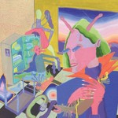

Quick Takes (September 2016)
Despite a jam-packed September, I can't help noticing how Carl and I ended up a little bit underwhelmed with many of the albums we reviewed this month. But since both of us got to cover most of our favorites on full-length form, it only makes sense this month's choices are mostly solid, but unspectacular, releases.
There is, however, a lot we'd like to recommend. I have to say I've been listening to the new Okkervil River more than that meager score suggests, but it's one of those whose flaws I can't ignore even if it's the kind of folk album that gets me in a proper fall mood. Carl was enchanted with Emma Ruth Rundle, and rightfully so. She just keeps getting better. And I unpredictably endorsed Cymbals Eat Guitars' latest, a band we've constantly celebrated on this very same website even if we've never given them much coverage. (Unintentional disclosure: I just realized I'm the only one who's written about this band on No Ripcord!) Oh, and Carl and I are very much into Ultimate Painting. What can I say? We're both shameless slackers.
What were your favorite albums during the month of September? Anything we didn't get to review on our site that we should've? You can always reach us on facebook, or on our official twitter page. - Juan
...
Billie Marten
Writing of Blues and Yellows
(Sony)
It is quite simply startling that Billie Marten, or Isabella Tweddle to her friends, is only seventeen. It’s a bit clichéd to play on the age of a musical wonderkid, but Marten’s unerring ability – with such minimal experience - to arrange her hazy indie-folk music into such beautiful songs is nothing short of staggering. Writing of Blues and Yellows saunters with a supremely delicate grace, and it relies on its proficiency on this front solely to carry it. It is essentially indie-folk by numbers, with a nervy wistfulness and soft-hued canvas, but its aching beauty prevents the record from stifling a listener with its persistent translucence. Marten is a Yorkshire lass, and it's perhaps fitting that her music would compliment a strong cup of tea and a day of cold rain so suitably. Amongst a precession of peaceful and sedate allure, 2015 single Bird still sounds as gorgeous as it did a year ago. [7/10] Carl Purvis
Cymbals Eat Guitars
Pretty Years
(Sinderlyn)
It’s become increasingly more difficult for Cymbals Eat Guitars to acquire the all-too-desirable status of indie rock permanence. The Stalen Island rockers have managed to get to album number four with a fervent creative thirst, a rarity since most indie bands either ship out or embark on a more mainstream route once they get tired of going through the tedious, though necessary, cycle of releasing an album every two or so years with diminishing returns. The only approach they could take at this point is to simply write good songs, and fortunately, Cymbals Eat Guitars still churn out some of the most thoughtful and heartfelt statements over their peers. In Pretty Years, the perennial late 90’s sounding rockers are stepping somewhat outside the box by introducing elements of heartland Americana and synth rock without turning away from their layered, guitar-heavy parts. What started as a band that embraced knotty arrangements and abstract prose now embraces a more direct and life-affirming route, taking a more lively and optimistic approach that’s natural step from 2014’s grief-stricken LOSE. But Pretty Years doesn’t sugarcoat things just for the sake of it: the band is just as apprehensive about life’s everyday troubles, and it’s by holding on to a healthy sense of proportion that Cymbals Eat Guitars retain their quietly visceral power. [8/10] Juan Edgardo Rodríguez
 Emma Ruth Rundle
Emma Ruth Rundle
Marked for Death
(Sargent House)
Emma Ruth Rundle’s follow up to 2014 debut Some Heavy Ocean sees the LA native plumbing feelings of loss, defeat and self-destruction, insulating startlingly vulnerable moments with walls of frankness and noise. The production is adventurous, with its almost cinematic grandeur allowing the dark, hypnotic grunge guitars to boast vivid textures. Tracks repeatedly start as stirring murmurs before increasing in density and blooming into cascading barriers of noise. Protection is arguably the album’s finest moment, with a wordless chorus acting as the last line of defence and final catharsis for Rundle’s exposed and intense susceptibilities. Marked For Death consistently shows Rundle as a master when it comes to shaping vast soundscapes, with particular control over layering and density, and the correlation of this with the devastating probity of her lyrics results in some very potent moments. With its tidal grunge and Tori Amos likenesses, the record has a markedly nineties indebted feel to it. Marked For Death is concise, but often finds itself limited by its own rigor. [7/10] Carl Purvis
 Okkervil River
Okkervil River
Away
(ATO)
Will Shelf always provides a fullness to his incandescent folk arrangements. Away, his eighth full-length, is a more tenuous effort that articulates Shelf’s thoughts with maudlin self-reflection. There’s a certain looseness to the arrangements that lets the album’s sequencing flow like a gentle wind, with his usual long-winded conversations of self mostly carrying the heavy burden. But you wouldn’t tell since Shelf is in such a spirited mood - he’s at his comical best as a roots-rock ensemble marks his every step with The Industry, while a chamber jazz sound gently crests the listener on the downright gorgeous Call Yourself Renee. This is Shelf’s project through and through, with a cast of musicians heeding to his every breath and whisper. So Away may only appeal to those who are truly committed to Shelf’s unyieldingly wry judgment, but the score that accompanies it is beautifully intoxicating. [7/10] Juan Edgardo Rodríguez
 El Perro del Mar
El Perro del Mar
KoKoro
(The Control Group)
Beauty and elegance is always at the core of every El Perro del Mar release. Swedish songwriter Sarah Assbring’s softly cooed vocals can mold into different shapes regardless of the direction that she takes, a laudable quality to have since she’s been embracing all kinds of globetrotting influences after putting out her revealing classic pop debut. In Kokoro, Assuring effectively utilizes an assortment of Asian and Middle Eastern instrumentation that provides a colorful and enlightening view to the album’s self-reflective musical excursions. Assbring’s usual melancholy demeanor is now a thing of the past, and though that attribute has always resonated with a seductive touch, it’s a delight to hear how she’s fully let out a more sparkling and intrepid personality. Every musical detour she takes on KoKoro sounds carefully plotted, and though it may occasionally wander without a clear center, it hardly lessens her severe case of wanderlust. [7/10] Juan Edgardo Rodríguez
Slaves
Take Control
(Virgin/EMI)
Isaac Holman and Laurie Vincent have wasted little time in following up their snot-nosed, piss-soaked debut album. 2015’s Are You Satisfied? coated a grottiness with a sugary pop sensibility, before dunking it again in more undesirable bodily fluids. Take Control explodes out of the blocks as if it’s picking up where Are You Satisfied? left off, with Spit It Out adorning a snarling, menacing riff with a typically anti-status quo lyric before the riff erupts into a full-bodied punk chorus. From there, the similarities with Are You Satisfied? are fewer and further between. The haphazard uncleanliness is still there, but the enthusiasm and provocation are much less prominent. We’ve heard enough from Slaves in their fledgling career thus far to know that their sound is always going to be abrasive, but with the exception of Spit It Out, the quirks that made Slaves as appetising a proposition as they were are nowhere near the forefront. Taking their place is a rushed, haphazard dish that could have done with a bit longer in the oven. [5/10] Carl Purvis
 So Cow
So Cow
Lisa Marie Airplane Tour
(Jigsaw Records)
Every So Cow record lends an air of desperate urgency. It’s a trait that’s fueled Irish songwriter Brain Kelly since his self-titled 2009 debut full-length effort, a predominantly fragmented collage of loose punk-pop with a wildly eccentric everyman as its protagonist. Things haven’t changed much for Kelly, sans 2014’s The Long Con, which was the first time he used a recording studio to give his usual home recordings a nicer finish. In Lisa Marie Airplane Tour, Kelly distances himself even more from the miniature pop bursts of his earlier work, which blended Guided by Voices’ workmanlike hooks and Jad Fair’s sheer spontaneity, with a more sober and de-stressed batch of songs that, though sharply written, sounds more like power pop throwaways. That quirky, slapdash confidence is still there, but with less punch and more slicing but tired chord arrangements. It can be chore to find Kelly at his lively best in Lisa Marie, an unusual occurrence considering his usual songwriting is so tunefully immediate and compulsive. [6/10] Juan Edgardo Rodríguez
 Thomas Brinkmann
Thomas Brinkmann
A 1000 Keys
(Editions Mego)
Electronic music veteran Thomas Brinkmann has spent a good two decades covering a wide scope of conceptual pieces with a complete disregard to any limitations of craft. The German producer has produced works that are both distinctly danceable and artfully unapproachable. His latest, A 1000 Keys, is debatably one his most challenging yet, a 75 full minutes primarily composed of endlessly revolving piano chords. Some fuming oscillating sounds and percussion hits can be heard on occasion, but Brinkmann primarily, and mercilessly, plays those keys with disparate tempo changes with hardly any variations, a technique that’s not too far off from the repeated modulations of last year’s What You Hear (Is What You Hear). Brinkmann succeeds at providing an unnerving unease, though in a more academic sense, he justifies how those escalating plinking sounds were highly measured in an attempt to come up with some systematic observations. But is it listenable? It’s something of an endurance test that you’ll find yourself tempted to skip and skim. Still, A 1000 Keys has the uncanny ability to both fascinate and infuriate those who choose to stay for the entire recording. [6/10] Juan Edgardo Rodríguez
 Ultimate Painting
Ultimate Painting
Dusk
(Trouble in Mind)
The last few embers of summer have just about died out, and a new Ultimate Painting record has arrived with an autumnal feel for a third consecutive year. Jack Cooper and James Hoare have developed a songwriting unit that is impressive in its untroubled restraint, with meandering, drowsy guitars and pensively delivered vocals accounting for the album’s blueprint. This might sound familiar, but Dusk is not simply a rehash of the band’s previous records. Minor tweaks in amp settings and sleepier chord progressions result in a more fluid album, allowing the moods to venture into murkier, more languid waters. Song For Brian Jones is an early chance to notice this. Vocals and guitars move together at an easy pace, but there is a perseverance about the simplistic arrangement that creates an indirect urgency. Who Is Your Next Target? does something similar, whilst the album’s penultimate track, Silhouetted Shimmering, creates the illusion of an expanded soundscape without adding any additional moving parts. Some tweaks are almost imperceptible, but when administered at the right place and the right time, Dusk shows an incidental dynamism that Ultimate Painting haven’t shown before. [7/10] Carl Purvis
The Wytches
All Your Happy Life
(Heavenly Recordings)
Brighton garage-bruisers showed with their 2014 debut, Annabel Dream Reader, that their music is the polar opposite of easy listening. Their sound was awkward, unsettling and at times earsplitting, but it was deliberately so. The raw, psychedelic surf-grunge is not as exposed this time around, with their sound less crude and more defensive. This is, however, another side of The Wytches that simply shouldn’t be as captivating as it is. With All Your Happy Life, guitars provide more of a safeguard to Kristian Bell’s agitated vocals, creating a more uniform, sullen fluidity to this album when compared to its elder sibling, which relied on off-kilter, menacing guitar melodies almost exclusively. One thing that hasn’t changed is the deluge of garage that immerses the majority of the arrangements, and this allows Bell’s hostile assaults to be more focused than they were two years ago. The Wytches mesh of sound is the musical embodiment of sixties surf dressed in severe Halloween costumes, and their ability to turn such agitation into something that is, against all odds, listenable, is a testament to this band’s grasp on their own sound. [7/10] Carl Purvis
13 October, 2016 - 04:30 — No Ripcord Staff